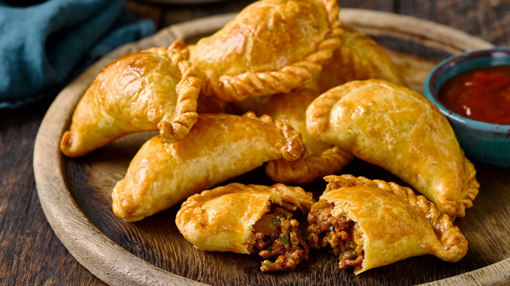

Las empanadas son rre criollas, tan asi que son comunes en actos y eventos populares, con precio accesible de consumision sencilla, son una de las comidas mas practicas para hacer.
Para hacer empanadas tenemos que preparar el relleno, asi como preparar la masa para dichas empanadas, ya que esta masa es la que envuelve el relleno que preparamos con anterioridad , en todo caso tenemos que estaar listos para lo que se viene
Debemos proceder con cautela, ya que podemos quemar la receta y cagarla jaja